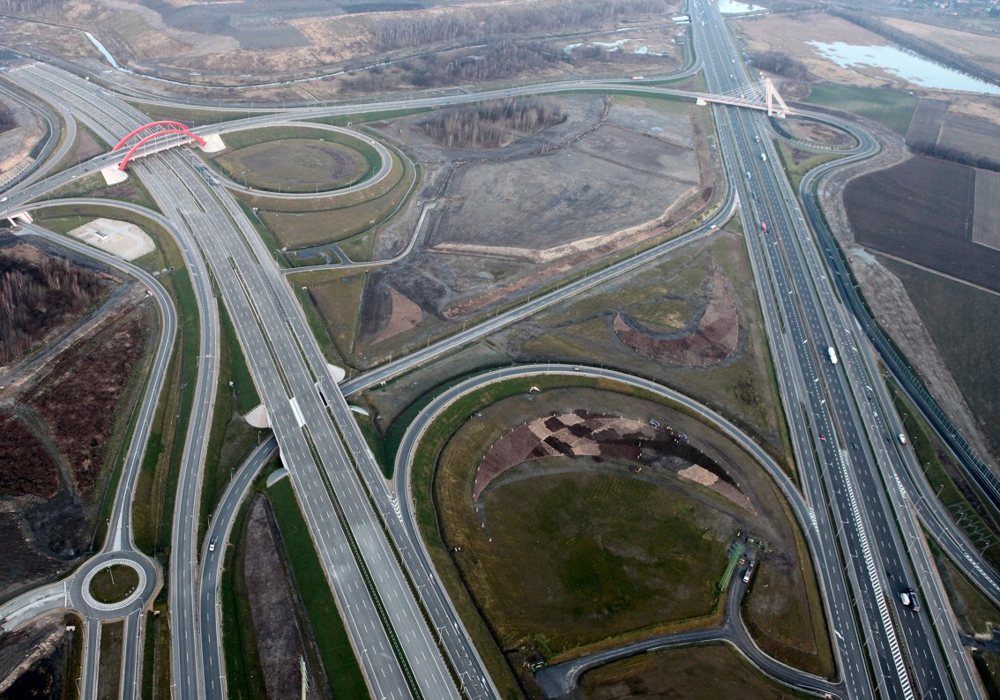

System wspomagania decyzji dla transportu publicznego
Metropolis AI to zaawansowane narzędzie stworzone z myślą o wsparciu operacyjnym i strategicznym dla instytucji zarządzających transportem publicznym. Rozwiązanie to wykorzystuje dane operacyjne, modele matematyczne oraz sztuczną inteligencję do precyzyjnego przewidywania skutków decyzji, ich optymalizacji oraz modelowania sytuacji kryzysowych.
Główne korzyści dla ZTM:
Metropolis AI pozwala na planowanie działań w długim horyzoncie czasowym, a jednocześnie daje realne wsparcie decyzyjne w bieżących sytuacjach takich jak awarie, wypadki drogowe, zmienne warunki atmosferyczne czy wzmożony ruch pasażerski. Dzięki zastosowaniu modeli sztucznej inteligencji i symulacji zdarzeń, każda decyzja może być przetestowana przed jej wprowadzeniem, co znacząco ogranicza ryzyko błędów i kosztownych korekt.
Zarządzanie sytuacjami kryzysowymi
Moduł zarządzania kryzysowego pozwala na natychmiastową reakcję w przypadku nagłych zdarzeń blokujących ruch. System w ciągu kilku minut analizuje wszystkie możliwe scenariusze i proponuje optymalne rozwiązania, minimalizujące wpływ na pasażerów i koszty operacyjne.
Symulacja zamknięcia skrzyżowania
Wybierz skrzyżowanie lub odcinek drogi na mapie, aby zobaczyć natychmiastową analizę wpływu na sieć transportową. System przeprowadzi symulację i zaproponuje alternatywne trasy dla komunikacji miejskiej.
Wybierz odcinek do zamknięcia:
Przewidywany czas zamknięcia:
Wyniki analizy
Rekomendowane działania
System Metropolis AI proponuje następujące rozwiązania:
- Tymczasowe przekierowanie 18 linii przez alternatywne trasy
- Uruchomienie 6 dodatkowych autobusów na objazdy
- Tymczasowe zawieszenie 3 przystanków
- Utworzenie tymczasowego węzła przesiadkowego przy ul. Nowogrodzkiej
- Wysłanie powiadomień do 15,000 użytkowników aplikacji mobilnej
Analiza zapełnienia autobusów
System analizuje dane historyczne oraz bieżące pomiary z czujników w autobusach, aby przewidywać zapełnienie pojazdów na poszczególnych odcinkach tras. Dzięki temu możliwa jest optymalizacja częstotliwości kursowania oraz wielkości taboru.

System odpowie na pytanie: "Jaki wpływ na zapełnienie autobusów będzie miało usunięcie istniejących linii?" oraz "Jakie będzie wykorzystanie nowych, planowanych linii?". Możliwa jest także symulacja różnych scenariuszy zmian w sieci komunikacyjnej.
Planowanie sezonowe
System pozwala na przygotowanie z odpowiednim wyprzedzeniem reorganizacji linii komunikacyjnych na różne okresy, takie jak wakacje, ferie, czy duże wydarzenia. Metropolis AI analizuje historyczne dane, trendy, a także prognozy dotyczące ruchu pasażerskiego, proponując najlepsze rozwiązania.
Wybierz typ planowania:
Przewidywana zmiana natężenia ruchu:
Wyniki analizy
Rekomendowane działania
System Metropolis AI proponuje następujące rozwiązania w okresie wakacyjnym:
- Zmniejszenie częstotliwości kursowania na 42 liniach miejskich
- Zwiększenie kursów na trasach rekreacyjnych (12 linii)
- Uruchomienie 3 dodatkowych linii sezonowych do popularnych miejsc wypoczynku
- Tymczasowe zawieszenie 5 linii o najmniejszym natężeniu ruchu
- Redukcja zapotrzebowania na flotę o 68 pojazdów
Adaptacja w czasie rzeczywistym
System monitoruje bieżącą sytuację na drogach i trasach komunikacji miejskiej, reagując na nieprzewidziane zdarzenia. Dzięki integracji z systemami GPS, danymi z kamer oraz informacjami o warunkach pogodowych, może rekomendować zmiany w rozkładzie jazdy w czasie rzeczywistym.

System automatycznie wykrywa anomalie w ruchu drogowym i proponuje rozwiązania, takie jak zmiana trasy, dodanie dodatkowego pojazdu czy przekierowanie pasażerów na alternatywne połączenia. Wszystkie decyzje są podejmowane na podstawie aktualnych danych i modelowania predykcyjnego.
Optymalizacja floty pojazdów
Moduł optymalizacji floty pozwala na precyzyjne określenie potrzebnej liczby pojazdów dla zachowania płynności ruchu, z uwzględnieniem różnych warunków i pór dnia. System analizuje historyczne dane o przepełnieniach i opóźnieniach, prognozując przyszłe zapotrzebowanie.
Parametry analizy
Wybierz czas analizy:
Wyniki analizy
Rekomendowane działania
System Metropolis AI proponuje następujące rozwiązania:
- Zwiększenie częstotliwości na 12 głównych liniach w godzinach szczytu
- Przesunięcie pojazdów z tras o mniejszym natężeniu (5 linii)
- Uruchomienie 6 dodatkowych kursów ekspresowych
- Skorzystanie z 8 pojazdów rezerwy technicznej
- Odłożenie planowanych przeglądów technicznych dla 4 pojazdów
Optymalizacja kosztowa
Moduł optymalizacji kosztowej pozwala na znalezienie optymalnego balansu między kosztami operacyjnymi a jakością usług transportowych. System analizuje zużycie paliwa, koszty osobowe, amortyzację taboru oraz przychody z biletów.
System identyfikuje nieefektywne kursy i proponuje alternatywne rozwiązania, takie jak zmiana typu pojazdu, modyfikacja częstotliwości czy optymalizacja tras. Wszystkie propozycje uwzględniają potrzeby pasażerów oraz ograniczenia techniczne i organizacyjne.
Planowanie infrastrukturalne
Moduł planowania infrastrukturalnego wspiera decyzje dotyczące lokalizacji nowych przystanków, zajezdni, węzłów przesiadkowych oraz innych elementów infrastruktury transportowej. System analizuje dane o przepływach pasażerów, dostępności gruntów oraz kosztach inwestycji.
System identyfikuje obszary z niedostateczną obsługą transportową oraz miejsca, gdzie modernizacja infrastruktury przyniesie największe korzyści. Analizy obejmują aktualne przepływy pasażerskie, prognozy demograficzne oraz plany rozwoju miasta.